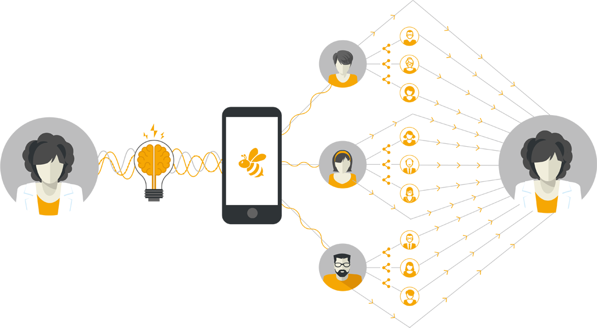

Better Access. Better Health.
The BeeWell App
BeeWell gives providers more time with clients. It grants patients access to valuable, informational resources written and distributed by trusted health industry professionals.
-
Stay Connected With Patients
Through the BeeWell app and social media module, health and wellness providers can proactively communicate with patients to decrease miscommunication and iron out any kinks that may arise throughout the caregiving process.
-
Stay Connected With Patients
Through the BeeWell app and social media module, health and wellness providers can proactively communicate with patients to decrease miscommunication and iron out any kinks that may arise throughout the caregiving process.
-
Convenient and Easy To Use
Each BeeWell provider can update and post new and original content as often as they like through an easytouse dashboard. And, the app is free for patients to download to their smartphone or tablet.
How It Works
Revolutionizing Patient-Provider Communication
As the industry becomes increasingly paperless, BeeWell is at the forefront of revolutionizing provider-client communication. Not only can providers connect directly with patients, but BeeWell users have the power to share content. As content is distributed, potential clients learn about proactive providers. It’s a win for everyone!
Health & Wellness Providers
BeeWell provides a platform for health and wellness providers to stay connected with patients by seamlessly communicating through the easytouse app.
The Networker $149
Professionals provide their patients and clients with connectivity to the BeeWell application. Users can access their patient portal, ask questions of the provider, and browse through quality wellnessrelated content.
The Buzz $49
BeeWell’s social media management platform, The Colony, allows providers to select content and post across multiple social media channels at the same time. When readers click on a post, they are redirected to the provider’s own personally branded social media homepage. Readers can also share these posts on their own social media outlets, creating additional awareness of the provider.
BeeAll $179
The ultimate prescription for your practice’s communication and content needs. By combining the BeeWell app and The Colony into one, professionals and patients will be able to communicate in innovative ways that weren’t possible before BeeWell.
For Providers
Streamline communication with your patients and clients. BeeWell gives you the power to determine the content your patients read, while providing them with an easytoaccess platform that directly connects to their most trusted resource – you!
Schedule A DemoPatients & Clients
The BeeWell app is free for patients and clients to download and use. It provides educational resources created by trusted health and wellness professionals.
Users can communicate with providers in a convenient, efficient manner, while accessing important documents and managing digital records.
App Features
Easily Accessible
The user-friendly app is easily downloaded and navigated, requiring minimal clicks and steps.
Online File Cabinet
Central location for patients to access preand postvisit instructions.
Saves Time
Quickly and easily schedule or reschedule appointments.
Connectivity
An innovative, direct way for professionals and patients to manage communication and share resources.
Convenient
Allows professionals to get straight to the heart of health matters, eliminating extraneous phone calls or trips to the provider’s office.
Content Hub
Users have access to a variety of general wellness information that is easily shareable on social media.